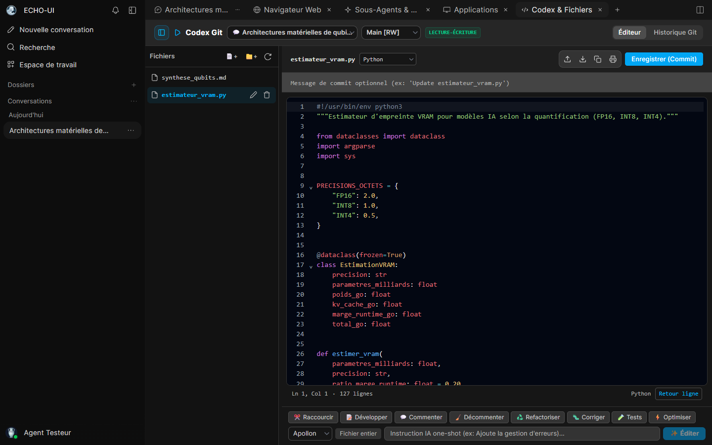
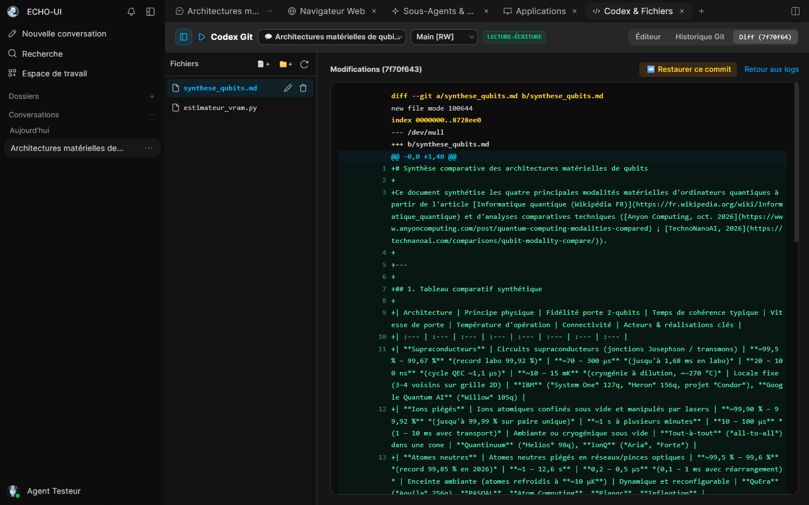

12. Édition & Visuel
Produire, visualiser et versionner au même endroit
Au-delà du texte, ECHO permet de concevoir des schémas interactifs, de générer et retoucher des images à partir de vos références visuelles, puis de conserver, relire, éditer et restaurer l'ensemble des documents et codes produits au sein d'un gestionnaire intégré : l'onglet Codex & Fichiers.
1. Visualisations et schémas interactifs (17 moteurs)
Lorsque vous demandez un graphique, un organigramme, un planning ou une représentation scientifique, l'assistant transmet uniquement les données brutes structurées à un module visuel dédié. Chaque rendu est contrôlé visuellement avant d'être affiché dans une vue interactive intégrée à la conversation (sans duplication de code inutile dans le texte de la réponse).

Rendu visuel interactif ECharts généré, vérifié et affiché directement dans le fil de conversation.
| Famille de rendu | Exemples d'usages | Moteurs disponibles |
|---|---|---|
| Diagrammes & Processus | Organigrammes, séquences, croquis à main levée, cartes mentales, processus métier, graphes relationnels | mermaid, sketch, markmap, bpmn, cytoscape |
| Temps & Planification | Plannings de projet, frises historiques, chronogrammes de signaux numériques | gantt, timeline, wavedrom |
| Statistiques & Cartes | Tableaux de bord 2D/3D, graphiques déclaratifs, cartes géographiques avec repères, illustrations vectorielles | echarts, vega, leaflet, svg |
| Sciences, 3D & Molécules | Courbes et surfaces mathématiques 2D/3D, maquettes spatiales 3D, voûte céleste, molécules 3D et formules chimiques 2D | science, aframe, astro, bio, chem |
2. Génération, fusion et retouche d'images
Pour créer ou modifier une image, un sous-agent visuel spécialisé enchaîne génération et contrôle qualité (jusqu'à 3 essais automatiques) sans encombrer le fil principal avec des images intermédiaires brutes :
- Références multiples : vous pouvez fournir jusqu'à 10 images de référence (fichiers déposés, images du Codex ou URL publiques) pour fusionner des éléments, transférer un style ou modifier un décor.
- Formats géométriques : choix du cadrage cible (
1:1,3:4,4:3,9:16,16:9). - Retouches itératives versionnées : chaque essai et chaque modification demandée sur une image sont enregistrés comme une nouvelle révision du même fichier dans l'espace
generated, avec galerie de comparaison dans l'afficheur intégré. - Clôture propre : une fois que vous confirmez que le visuel vous convient (ou demandez de repartir de zéro), l'assistant ferme la session de retouche associée.
3. Le gestionnaire documentaire : Codex & Fichiers
L'onglet latéral droit Codex & Fichiers centralise les fichiers de la session selon leur rôle et leur niveau de protection.

Onglet Codex & Fichiers : édition colorisée de estimateur_vram.py sous CodeMirror 6 avec barre d'actions assistées par IA.

Suivi des révisions dans Codex & Fichiers : historique Git complet et comparatif Diff unifié numéroté de synthese_qubits.md.
Les cinq espaces disponibles
| Espace | Historique des versions | Rôle et règles d'accès |
|---|---|---|
main |
Versionné | Espace principal des livrables, rapports et codes source produits pour vous. Éditable manuellement et par l'assistant. |
plans |
Versionné | Plans stratégiques et listes de tâches associées. Protégé contre l'édition libre pour préserver le cycle de validation. |
generated |
Versionné | Images générées et retouchées. Chaque itération forme une révision consultable. |
sandbox |
Disque direct | Zone technique dédiée aux scripts d'exécution et calculs temporaires. Les livrables validés peuvent être promus vers main. |
files |
Lecture seule | Pièces jointes téléversées dans la conversation. |
Fonctions d'édition, de prévisualisation et de navigation
Éditeur & Prévisualisation universelle
Éditeur de code avec coloration syntaxique, numéros de lignes et sauvegarde Ctrl+S ; aperçu
intégré pour Markdown, HTML, SVG, CSV/TSV, images, PDF, audio, vidéo, et visionneuse hexadécimale pour les
fichiers binaires.
Édition assistée & Contrôle Diff
Depuis l'onglet, vous pouvez demander une modification ciblée par consigne libre ou action rapide et inspecter le comparatif ligne par ligne avant d'accepter le changement.
Voyage temporel & Multi-conversations
Consultation de l'historique des révisions, comparaison entre versions, restauration d'un état antérieur, et exploration en lecture seule des dépôts appartenant à vos autres conversations.
Actions rapides et liens cliquables dans le chat
Chaque bloc de code affiché dans une réponse dispose d'un bouton Envoyer au Codex pour
l'enregistrer immédiatement dans main. De même, les références de fichiers cliquables insérées par
l'assistant ouvrent directement l'onglet Codex & Fichiers sur le document ciblé (et sont
neutralisées si le fichier n'existe pas réellement). Une barre d'outils unifiée permet également d'importer (y
compris par glisser-déposer), exporter, copier ou imprimer un document ou une sélection.

Liens Codex cliquables générés directement dans le chat pour ouvrir synthese_qubits.md ou estimateur_vram.py d'un clic.
Dossier d'Ingénierie : Moteurs Visuels, Boucle Image, Codex Dulwich (14 Outils) & CodeMirror 6
1. Rendu Visuel Interactif & Imagerie (universal_visual_generator.py v6.24.1.1 & echo_visuals.py v5.237.19.1)
generate_rich_visualization(17 moteurs) : Pilote par Data Islands isolés sousMODEL_APOLLO(thinking="medium") les 17 moteurs (mermaid,sketch,markmap,bpmn,gantt,cytoscape,timeline,vega,wavedrom,leaflet,svg,echarts2D/3D-GL,sciencePlotly 2D/3D,aframe,astro,bio3Dmol.js,chem).- Contrôle Qualité Zéro-Disque : Boucle jusqu'à
GEN_SCHEMA_MAX_TRIES = 2essais : assemblageEchoUI.build_rich_view_html, rasterisation incognito 100 % RAM viarender_ephemeral_html→POST /render_ephemeral_view(browser_api.pyv6.16.0.1, viewport1200×800, settle250 ms, capture erreurs JS/DOM), et audit multimodal par_run_visual_critic(SYS_VISUAL_SCHEMA_CRITIC,response_schema=VisualCriticOutput, approbation dèsscore >= 6). generate_image&close_image_session: Fil multimodal persistantdlg_img_<hex8>danscognitive_threads. Accepte jusqu'àIMAGE_GEN_MAX_INPUT_IMAGES = 10images sources encodées viaload_image_as_base64. Boucle générateurMODEL_IMAGE_GEN(SYS_VISUAL_IMAGE_GEN, ratios1:1,3:4,4:3,9:16,16:9) ↔ critiqueMODEL_APOLLO(SYS_VISUAL_IMAGE_CRITIC,VisualCriticOutput,GEN_IMG_MAX_TRIES = 3). Nom court< 15caractères (_sanitize_image_short_name), commits Git séquentiels surCODEX_WORKSPACE_GENERATED("generated"), indexationecho_resources(resource_type="generated"), externalisationecho-asset://danstools_output/embeds/et affichage viaEchoUI.image_vieweravec galerie multi-essais.
2. Noyau Codex & Arsenal Git (echo_codex_tool.py v6.23.10.1 & echo_codex_git.py v6.18.1.1)
- 14 outils exposés :
create_codex,read_codex,edit_codex,delete_codex,create_codex_directory,move_codex,transfer_codex,list_codex,list_other_chats_ids,search_codex,history_codex,restore_codex,summarize_codex,open_codex_ui. - Gouvernance & Concurrence : Registre SSOT
ECHO_CODEX_WORKSPACES(main,plans,generatedversionnés viadulwichaveccore.autocrlf = false;sandboxnon versionné). Verrou asynchrone partagéget_codex_lock(user_id, chat_id)couvrant mutations et synchronisation SQLite (sync_codex_registry_save/delete/relocate). - Édition & Garde OCC SHA-256 : Dans
edit_codex, les paramètresnew_content(remplacement direct) etinstructions(édition assistée parMODEL_APOLLO) sont mutuellement exclusifs ; le mode assisté applique un contrôle optimistepre_sha256vspost_sha256(concurrent_modification_conflict) et refuse les binaires (binary_edit_not_supported). - Pagination, Binaires & Transferts :
read_codex(exempté du délestage) pagine surHEADetcommit_hashàECHO_CODEX_MAX_READ_LINES = 800lignes etECHO_CODEX_MAX_READ_BYTES = 46 080octets viapaginate_lines_window, et intercepte les binaires (binary_content_omitted+ blocs de 16 octets).transfer_codexapplique la matriceCODEX_TRANSFER_SOURCES → CODEX_WRITABLE_WORKSPACESavec quotas (main: 200 fichiers / 25 Mo unitaire / 100 Mo total ;sandbox: 500 fichiers / 512 Mo unitaire / 1 Go total). - Multi-Chat Read-Only :
list_other_chats_idsparcourt les dépôts viaos.walk(..., followlinks=False);list_codex(CODEX_LIST_MAX_ENTRIES = 200) etread_codex(target_chat_id=...)n'injectent aucune entrée dans la base SQLite locale.
3. Interface SvelteKit, API Codex & Liens Cliquables
- Routeur & Éditeur (
routers/codex.pyv6.18.18.1 &EchoCodexTab.svelte) : Intégration CodeMirror 6 (EchoCodexEditor.svelte+codexLanguages.ts), édition IA one-shot (POST /{chat_id}/ai-editviaEchoGeminiClient.call_cascadeetSYS_CODEX_EDIT), visionneuse hexadécimale (_format_hex_preview), téléchargement sécurisé (GET /downloadavecresolve_confined_codex_path,X-Content-Type-Options: nosniffet défense XSS HTML/SVG enapplication/octet-stream). - Bijection des Liens (
codex_links_filter.pyv6.6.9.1) : Exécuté en priorité80. En Outlet, valide l'existence physique viacheck_codex_file_existshors blocs de code et transforme les URN[label](codex:scope:ws/path)en ancres#codex:...interceptées par(app)/+layout.svelte(window.echoOpenCodex), ou neutralise en texte brut les références inexistantes. En Inlet, restaure l'URN canonique pour préserver la suture bit-perfect.